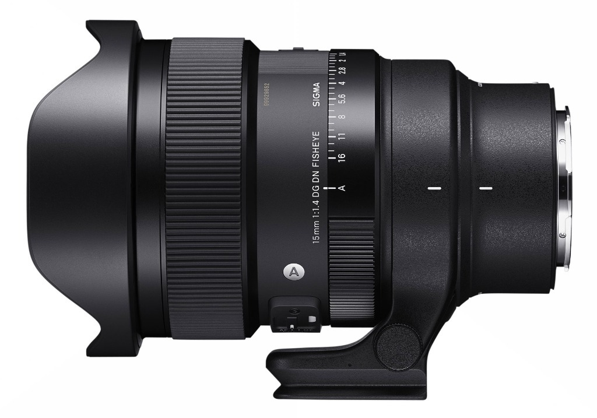
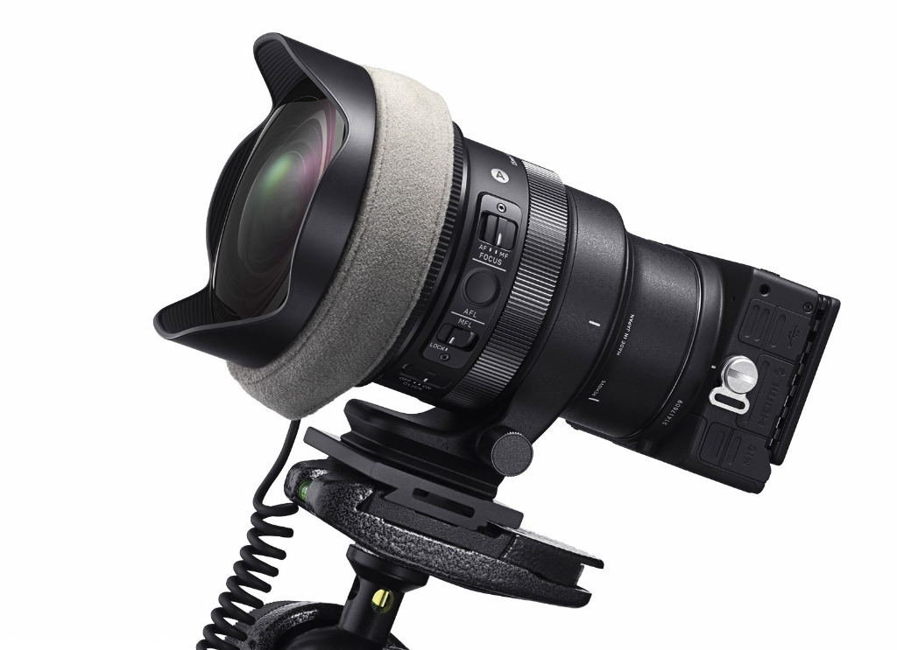
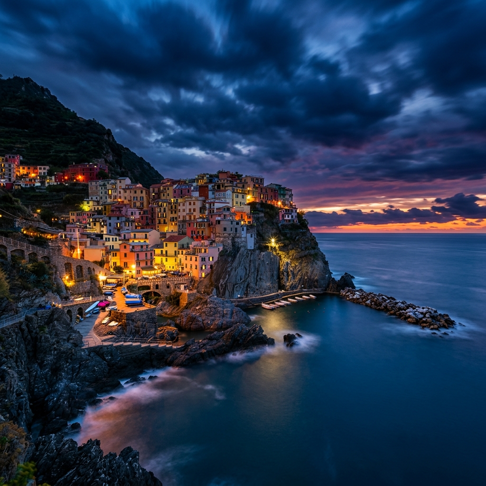
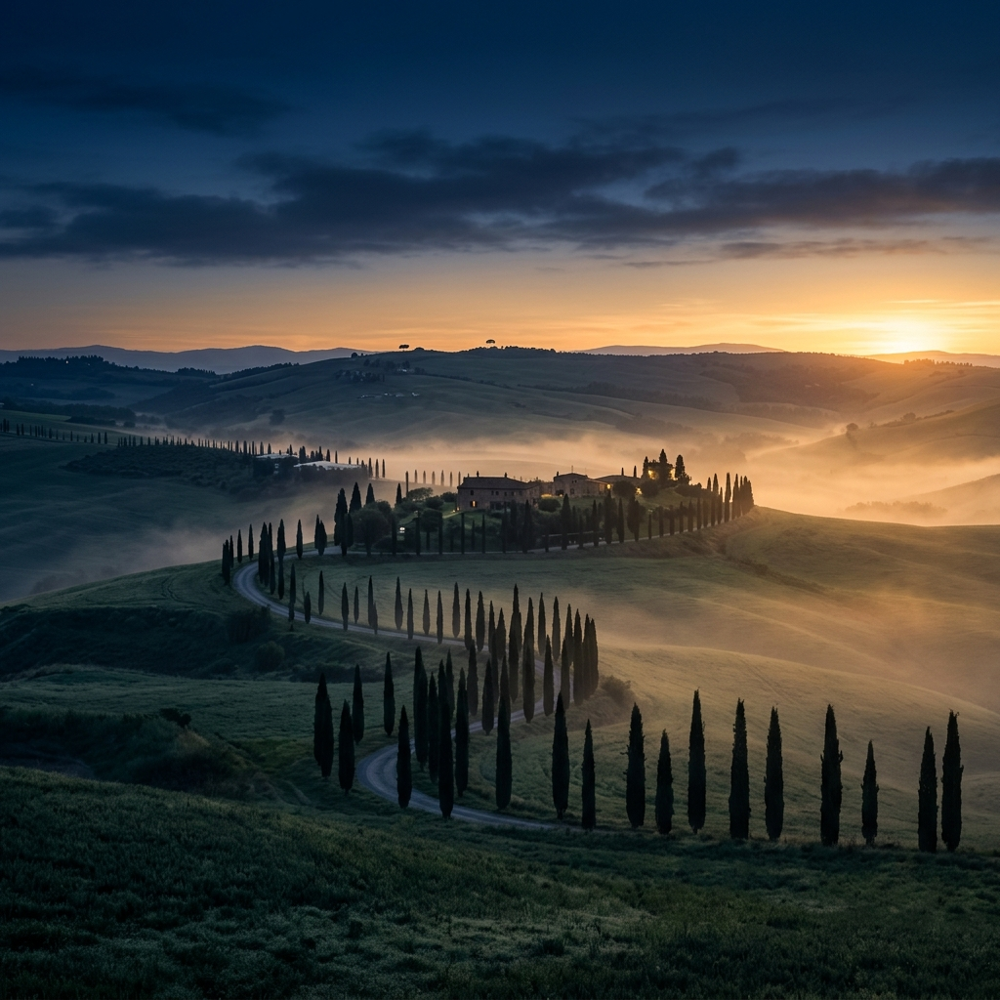
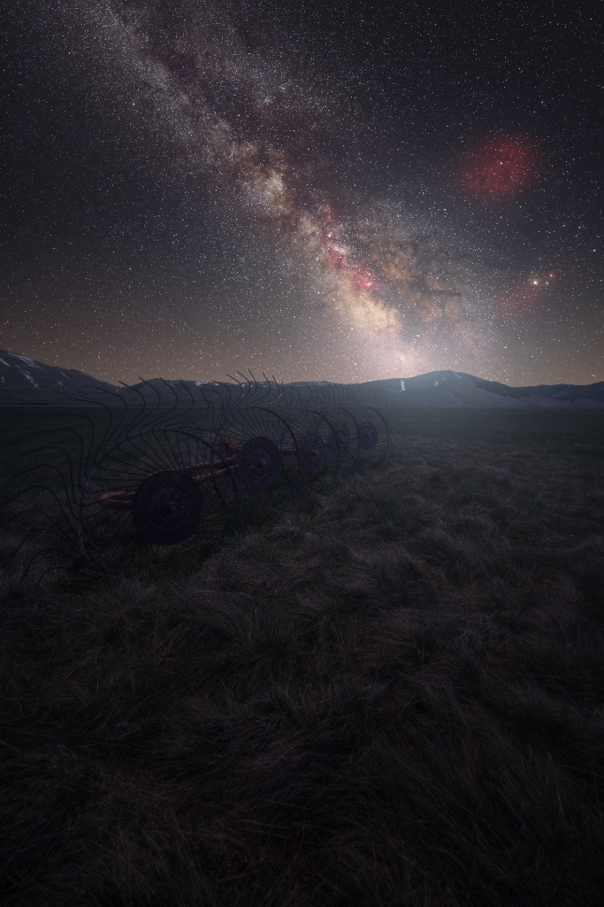
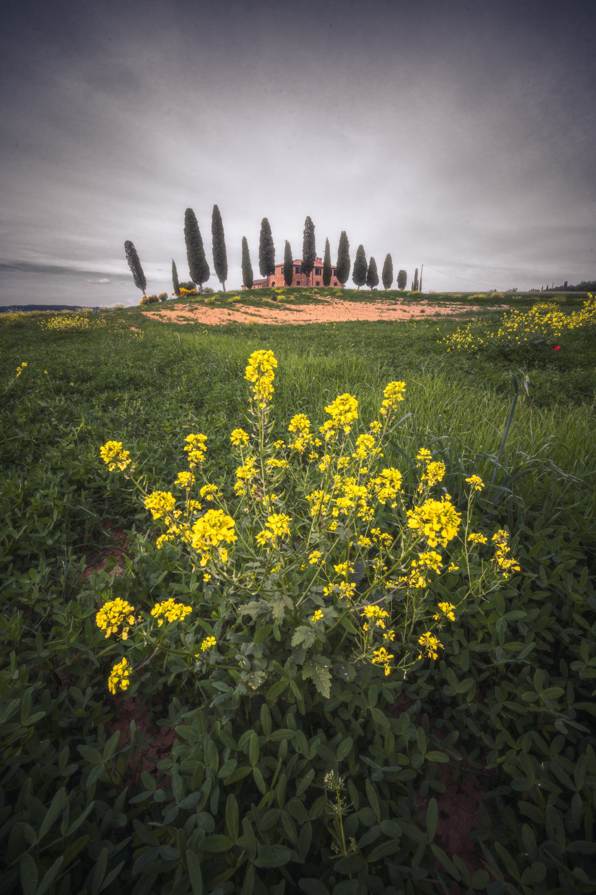
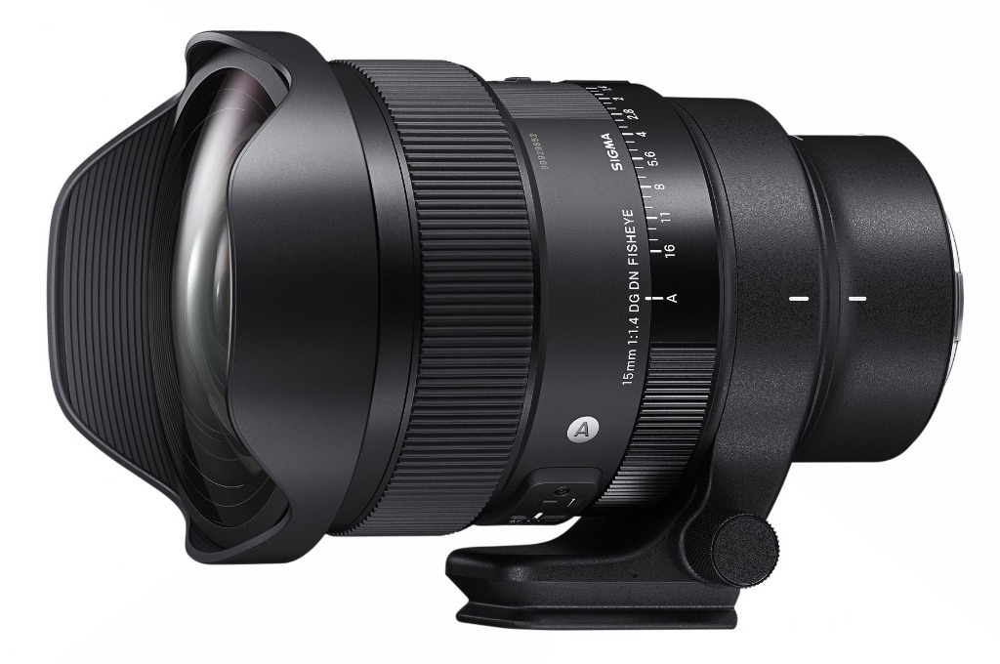

Sigma 15mm F1.4 DG DN Art Fisheye
Introduzione
Era da tempo che desideravo iniziare a scrivere articoli anche sul mio sito e non soltanto per realtà esterne. Devo molto ai ragazzi di Toscana Photo Service e a Vanguard, che mi supportano fin dall'inizio di questo percorso, ma è arrivato il momento di raccontare anche qui la mia esperienza sul campo. E quale miglior modo se non testando uno degli obiettivi più creativi e visionari mai concepiti?
SIGMA ha inoltre avuto un ruolo cruciale nel mio percorso di crescita professionale: mi hanno guidato costantemente nello sviluppo sui canali social, dandomi tantissimi spunti, idee e soprattutto tantissime occasioni sul campo.
Perché proprio lui?
Il Sigma 15mm F1.4 DG DN Art Fisheye è una pietra miliare dell'ottica fotografica: è il primo obiettivo fisheye diagonale al mondo per fotocamere Full Frame ad offrire l'incredibile luminosità di f/1.4. Combina un angolo di vista sferico di 180° ad una nitidezza chirurgica da centro a bordo, superando il vecchio concetto del fisheye come semplice ottica di nicchia per trasformarlo in un'arma potentissima per l'astrofotografia immersiva.

Perché un 15 mm Fisheye F1.4?
La differenza sostanziale rispetto ad un classico super grandangolo rettilineo (come il 14mm F1.4) risiede nell'inclinazione prospettica: il fisheye diagonale abbraccia l'intera volta celeste a 180° con una caratteristica distorsione sferica. Questo consente di catturare l'intero arco della Via Lattea in un unico scatto, senza dover ricorrere a complessi panorama multi-scatto.
📊 Tabella: Confronto Angolo di Campo & Prospettiva
| Obiettivo | Angolo di Campo (Diagonale) | Tipologia Prospettica & Utilizzo |
|---|---|---|
| 15 mm F1.4 Fisheye Art | 180.0° | Fisheye Diagonale: ottica immersiva a 180° per archi della Via Lattea in scatto unico |
| 14 mm F1.4 Art | 114.2° | Rettilineo Ultra-Grandangolare: linee rette corrette, nitidezza estrema per paesaggio notturno |
| 20 mm F1.4 Art | 94.5° | Rettilineo Grandangolare: prospettiva contenuta, ideal per composizioni astrofotografiche pulite |
Perché si compra un 15 mm Fisheye F1.4?
Si acquista per l'incredibile pacchetto di funzionalità pensate espressamente per la fotografia notturna:
- Lens Heater Retainer: Una scanalatura speciale sulla parte anteriore che impedisce alla fascia riscaldante anticondensa di scivolare davanti alla lente.
- MFL (Manual Focus Lock): Interruttore che disattiva la ghiera di messa a fuoco per evitare spostamenti accidentali durante la notte.
- Portafiltri Posteriore: Consente l'inserimento di filtri a gelatina ND o astro-filter.
- Collare Arca Swiss: Supporto per treppiede bilanciato rimovibile.

Prestazioni diurne & distorsione sferica creativa
Di giorno il fisheye regala prospettive d'impatto unico. Sfruttando la curvatura naturale del fisheye si possono creare composizioni dinamiche e tridimensionali in foreste, canyon e strutture architettoniche imponenti. A f/1.4 la nitidezza al centro ed ai bordi è sorprendente per un'ottica da 180°.


Prestazioni notturne & 180 gradi di cielo stellato a f/1.4
In notturna questo obiettivo è una rivelazione. La combinazione tra f/1.4 ed 180° di campo visivo consente di esporre la Via Lattea catturando la volta celeste intera con tempi di scatto contenuti e segnale pulitissimo. Il coma sagittale è totalmente azzerato grazie alle lenti ottiche speciali FLD e SLD.


Diffrazione & controllo del flare
La tenuta tra f/1.4 ed f/11 è uniforme e solida. Il trattamento Super Multi-Strato elimina bagliori e flare parassiti anche quando si inquadrano fonti luminose dirette ai margini dei 180 gradi.
Pregi e compromessi
La qualità costruttiva in magnesio e TSC è al vertice della categoria Art, resistente a polvere ed umidità. L'integrazione del supporto Arca Swiss e della scanalatura anticondensa ne fanno un'ottica da sogno per chi ama l'astrofotografia immersiva.

✅ PRO
- Angolo di campo 180° diagonale unico per l'intero arco della Via Lattea
- Luminosità f/1.4 record per un obiettivo fisheye full-frame
- Nitidezza eccezionale a tutta apertura da centro a bordo
- Lens Heater Retainer per blocco fasce riscaldanti anticondensa
- Collare Arca Swiss integrato e blocco messa a fuoco MFL
❌ CONTRO
- Distorsione sferica tipica fisheye (non rettilineo)
- Lente frontale a bulbo (richiede filtri posteriori in gelatina)
Conclusioni
Il Sigma 15mm F1.4 DG DN Art Fisheye è uno strumento straordinario che apre nuove frontiere espressive nell'astrofotografia. Permette di vivere il cielo notturno con uno sguardo completo a 180 gradi, garantendo al contempo una qualità d'immagine impeccabile.
Se vuoi provarlo direttamente sul campo durante i miei workshop, sarà un vero piacere fartelo testare sulla tua macchina fotografica!